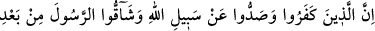
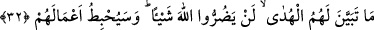
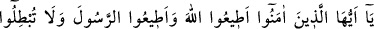
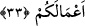

sonra sen Allah’ın mekrinden emin oldun mu?” diye soruldu. Hazret: “Benim ahidden
sonraki durumum aynen ahidden önceki durumum gibidir” dedi. Allah Teâlâ aziz ve
hakîmdir. Allah’ın huzur ve sınırlarında duran bir ârifin durumu böyle olunca cahil ve
gafilin durumu nice olur. Öyleyse herkes uyanık olmaya çalışmalıdır.
Şâir ne güzel söyler:
Kalpleri kararmışların gafletine halk güler,
Sabah fecrin beyazlığı sana gülerken, gâfil olma.
32. Nankörlük edip Allah yoluna engel olanlar ve kendilerine doğru yol belli
olduktan sonra Peygamber’i incitenler Allah’a hiçbir zarar veremezler. Allah
onların işlerini boşa çıkaracaktır.
“Nankörlük edip” insanları rızâ-i Bâri’ye ulaştırıcı en büyük vesile olan “Allah
yoluna” İslâm dinine muhâlefet ve düşmanlık ederek “engel olanlar,” Peygamber’in
tarafından başka tarafa intikal edenler “ve kendilerine doğru yol belli olduktan” yâni
Tevrat’ta Peygamber (s.a.)’in vasıflarını müşâhede ettikten, Peygamber’in göstermiş
olduğu mûcizelerden ve ona inen âyetlerden “sonra Peygamberi incitenler” -ki bunlar
Kurayza ve Nadr oğulları yahut Bedir günü müşrik ordusunu doyuran Kureyş
reisleridir- bu inkârları ve bu engellemeleriyle “Allah’a hiçbir zarar veremezler.”
Onların küfründen bir zararın eseri bile Allah’a erişmez. Aksine bu şerrin kıvılcımları
kendilerine döner. Yahut incitmekle Allah’ın rasulüne hiçbir zarar veremezler. Burada
Peygamber’e tâzim için ve ona yapılan eziyetlerin vahametini anlatmak için muzaf
hazfedilmiş, sanki bu incitme doğrudan Allah’a yapılıyor gibi kabul edilmiştir. “Allah
onların işlerini” Allah’ın dinini iptal konusunda ortaya koymuş oldukları hileleri,
entrikaları ve Allah’ın elçisine karşı sergiledikleri inadları “boşa çıkaracaktır.”
Böylece onlar, bu hareketlerle arzuladıkları hedeflere ulaşamayacaklardır. Aksine,
Yahudilerden Kurayza oğullarına ve Medine’de müşrik ordusunu doyuran Mekke
kodamanlarının çoğuna olduğu gibi öldürülecekler, yahut Nadr oğullarına olduğu gibi
sürgün edileceklerdir.